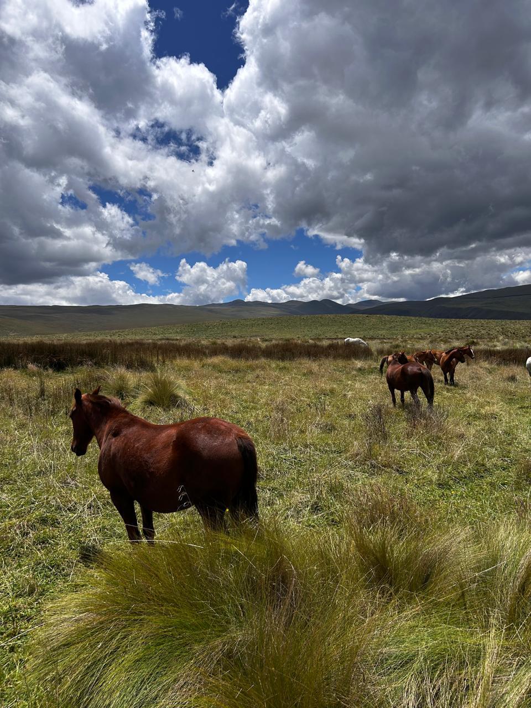
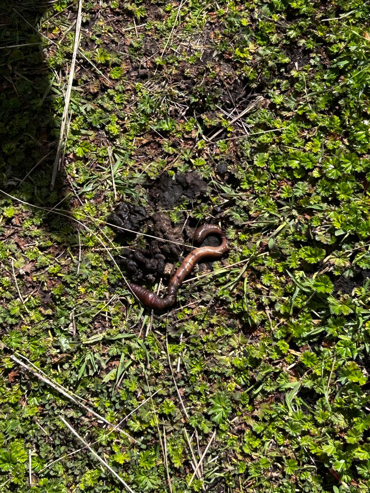
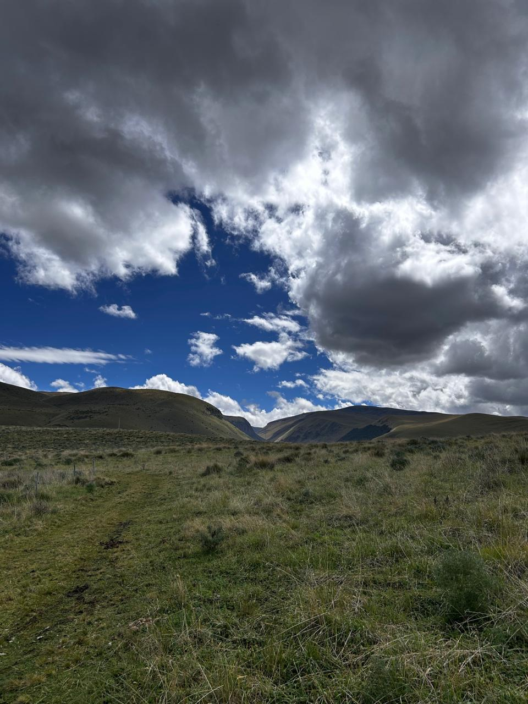

Este proyecto trata sobre mi visita a la reserva Chakana ubicada en el Antisana. Durante esta experiencia pude observar distintos paisajes naturales y comprender mejor la importancia de la conservación ambiental dentro de las reservas ecológicas.


Durante la visita pude apreciar la biodiversidad de la zona y observar diferentes especies de flora y fauna propias del lugar. Este tipo de experiencias permiten valorar más los ecosistemas naturales del Ecuador.
